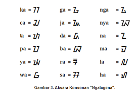
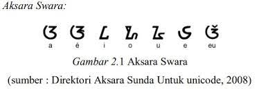
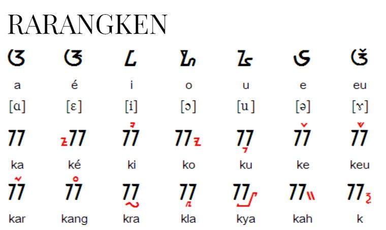

Bab-1: Aksara Sunda
Zaman dahulu, orang Sunda memiliki aksaranya sendiri dan disebut sebagai aksara Sunda. Aksara ini sekarang sudah jarang digunakan kecuali jika Anda membedah naskah kuno. Anda juga bisa menemukan ragam aksara ini sebagai penunjuk jalan di kota-kota yang ada di Jawa Barat.
Sejarahnya sangat panjang dan usia aksara mencapai 5 abad. Peninggalan penggunaan aksara ini dilakukan karena masuknya bangsa penjajah ke tanah Sunda. Anda bisa mempelajarinya di sekolah atau kursus khusus. Berikut ini adalah ulasan singkat tentang aksara ini.
Pengertian Aksara Sunda
Aksara Sunda adalah huruf-huruf yang membentuk bahasa Sunda dan digunakan oleh para orang Sunda. Meski bisa untuk digunakan ke bahasa lain, aksara ini tidak digunakan di tempat lain selain di tanah Sunda. Sejarahnya cukup panjang dan menyangkut kerajaan yang menduduki Jawa barat.
Aksara Sunda kerap kali mengalami perubahan dan aksara versi kuno nyatanya berbeda dengan yang digunakan saat ini. Perubahan ini diakibatkan oleh tidak banyaknya yang menggunakan kembali di abad ke-17. Meski begitu, jenis aksara masih dikenalkan di sekolah hingga saat ini.
Jenis Aksara Sunda
- Aksara Ngalagena
Salah satu contoh aksara yakni aksara Sunda ngalagena. Lambang bunyi yang ditimbulkan memiliki bentuk fonem konsonan. Secara umum, vokal yang ada dalam jenis aksara yang satu ini mengandung bunyi huruf a. Contoh kata yang digunakan adalah imah.
Dalam jenis ngalagena, jumlah aksaranya ada delapan belas jenis. Alat ucap yang digunakan pun bermacam-macam mulai dari artikulasi bibir, gigi, lidah, kerongkongan dan langit-langit. Aksara khusus seperti ba memiliki dua macam dan nya memiliki tiga macam bentuk.
Cara penggunaan dari aksara ngalagena pun akan tergantung pada harkat bunyinya. Hal ini berlaku untuk bunyi yang memiliki lebih dari satu jenis aksara. Penukaran bisa berlaku selama cara membacanya sesuai dengan jenis kata yang digunakan.
Aksara Sunda dalam jenis Ngalagena di antaranya adalah:
2.Aksara Swara
Nama lain dari aksara swara adalah vokal mandiri. Jika dalam abjad bahasa Indonesia kita mengenal 5 huruf vokal mandiri, dalam bahasa Sunda kita mengenal 7 macam. Tambahannya adalah é dan eu yang menjadi ciri khas orang Sunda dalam berbahasa atau berbicara.
Sepintas, e dan é sangat mirip. Hanya saja dalam bahasa Sunda, keduanya memiliki perbedaan yang cukup jauh. Sebagian orang mungkin membutuhkan penyesuaian. Ditambah lagi dengan swara eu yang hanya terdapat dalam bahasa Sunda saja, seperti dalam kata nyieun.
3.Rarangken Aksara
Dalam bahasa Sunda juga dikenal istilah rarangken. Rarangken merupakan salah satu sisipan yang akan menyempurnakan sebuah kata. Jadi, Anda tidak akan selalu menggunakan vokal mandiri untuk keseluruhan bahasa atau kata yang disusun. Rarangken secara umum memiliki 5 jenis yang berbeda.
- Rarangken Luhur
Rarangken yang satu ini hanya ada berada di atas huruf yang termasuk ke dalam kelas aksara ngalagena. Namanya adalah rarangken panghulu, pamepet, paneuleung, panglayar dan panyecek. Masing-masing rarangken akan memiliki suara yang berbeda.
Rarangken panghulu mengubah a menjadi i. Pamepet mengubah a menjadi e. Paneuleung mengubah a menjadi eu. Panglayar menambahkan huruf r. Sementara panyecek menambahkan huruf ng.
- Rarangken Handap
Seperti namanya, rarangken yang satu ini diletakkan di bawah alias di handap. Hanya aa tiga jenis rarangken dalam kategori ini yakni panyuku, panyakra dan panyiku. Fungsinya mengubah kata dalam jenis ngalagena menjadi beberapa jenis suara lainnya.
Panyuku akan digunakan untuk mengubah huruf a menjadi u. Sementara panyakra digunakan untuk menyisipkan huruf r di tengah dua huruf ngalagena. Yang terakhir adalah panyiku yang digunakan untuk menyisipkan huruf l di antara dua huruf.
- Rarangken Sajajar
Dinamakan sebagai rarangken sajajar karena penulisannya harus sejajar dengan huruf kategori ngalagena. Pelengkap yang satu ini memiliki 5 jenis dan fungsi yang berbeda. Jika menemukan aksara Sunda yang lebih kecil dan sejajar, maka itulah yang disebut rarangken sajajar.
Paneleng digunakan untuk mengganti a menjadi e. Pamingkal menambahkan y di tengah dua huruf. Pangwisad menambahkan h pada akhir huruf. Panolong mengubah a menjadi o. Sementara pamaeh berfungsi untuk mematikan huruf.
Tidak banyak yang tahu dan bisa membaca aksara Sunda meski orang tersebut berasal dari suku Sunda. Upaya pelestariannya dilakukan dengan cara mengajarkan bahasa Sunda sekaligus aksaranya di sekolah. Dengan begitu, aksara ini tetap lestari dan utuh hingga masa depan.
Nah, kalau kamu ingin lebih banyak tahu Aksara Sunda lagi? Yuk, bergabung di Mediapintar.com, kamu bisa belajar banyak hal di sana dan menjadi peneliti hebat, lho!.